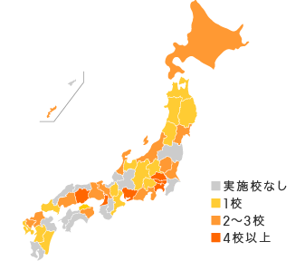
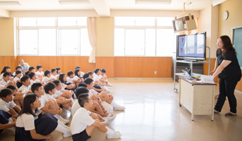
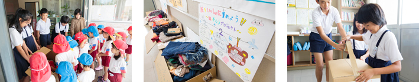
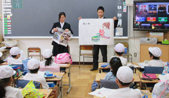
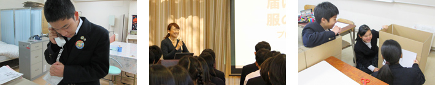

2014年度 活動実績・実施校一覧
2014年度は全国35都道府県から120校・約16,500人に
参加いただきました。
※その他は、小中・中高一貫校、養護学校など。

活動レポート
岡山県岡山市立西大寺南小学校
2014年6月23日、岡山のユニクロ店舗を統括するエリアマネージャーと店長が講師となり、小学校6年生を対象に出張授業を実施しました。
授業を受けた子どもたちはポスターや紙芝居、ビラ作成などを役割分担を決めて取り組みました。学校玄関と敷地内にある幼稚園に回収ボックスを設置して協力を呼びかけ、たくさんの子ども服を集めることができました。


東京都多摩市立東愛宕中学校
2014年10月29日、ユニクロの東京本部マーケティング部の社員が講師として、中学校1年生と2年生を対象に出張授業を実施しました。生徒会のメンバーを中心に小学校へ協力の依頼の電話をかけるところから生徒たちで実施。近隣の小学校３校と幼稚園1校に協力してもらい、結果として10箱の子ども服を集めることができました。


活動のあゆみ
- 2013年
- “届けよう、服のチカラ”プロジェクトとして参加校の公募を開始。
- 107校・約15,000人の児童・生徒が参加。
- 2014年
- 120校・約16,500人の児童・生徒が参加。海外にも展開し、フランスでも実施。
- 2015年
- 238校・約26,300人の児童・生徒が参加。タイでも実施。
- 経済産業省主催 キャリア教育アワード 奨励賞受賞。
- 文部科学省主催 青少年の体験活動推進企業表彰 審査員特別賞受賞。
- 2016年
- 270校・約30,120人の児童・生徒が参加。韓国でも実施。
- 2017年
- 322校・約30,600人の児童・生徒が参加。アメリカと韓国でも実施。
- 参加校向け“届けよう、服のチカラ”アワードを開始。活動報告会と表彰式も開始。
- 2018年
- 388校・約40,000人の児童・生徒が参加。
- 経済産業省主催 キャリア教育アワード 優秀賞受賞。
- 文部科学省主催 青少年の体験活動推進企業表彰 審査員特別賞受賞。